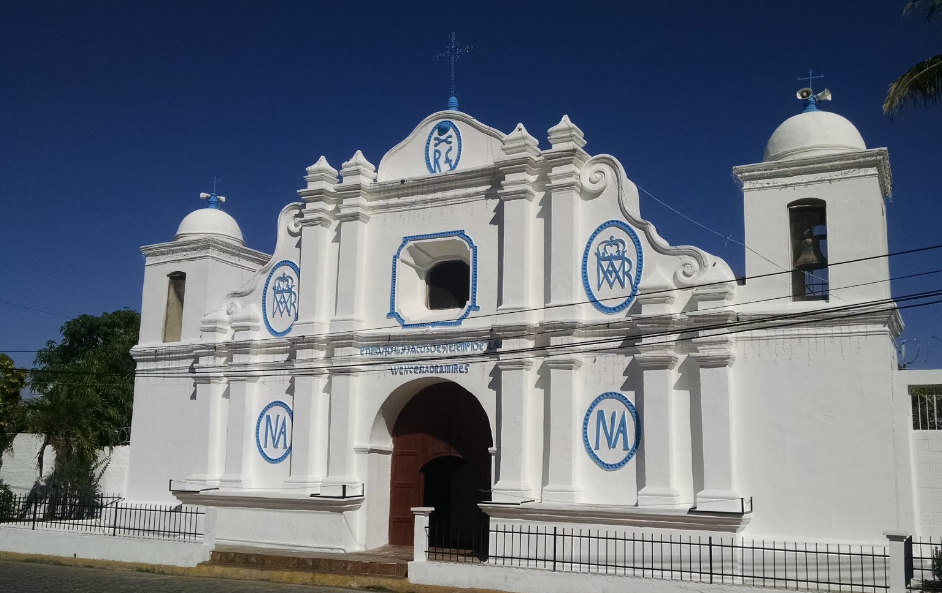
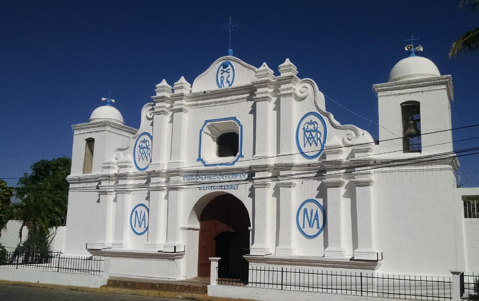
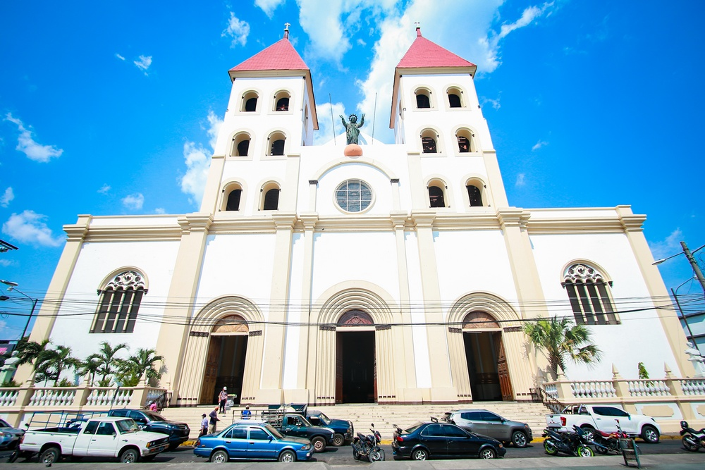
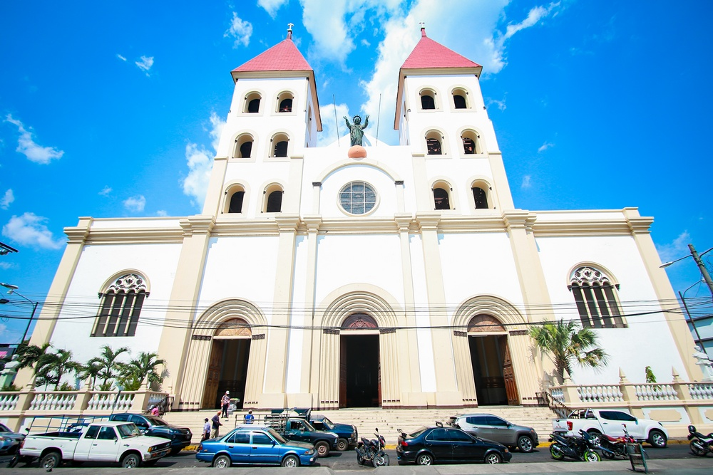
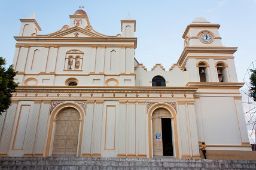
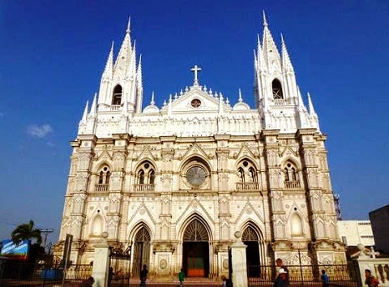
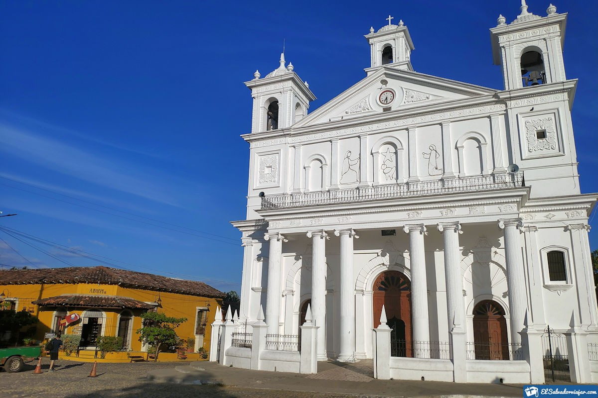
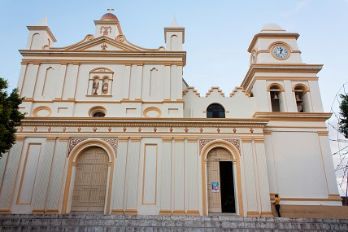
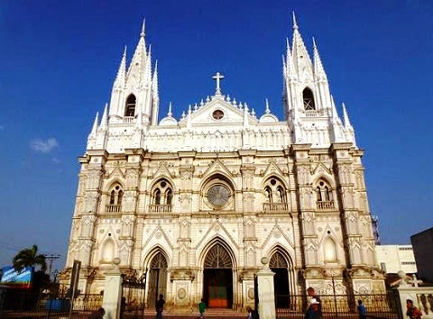
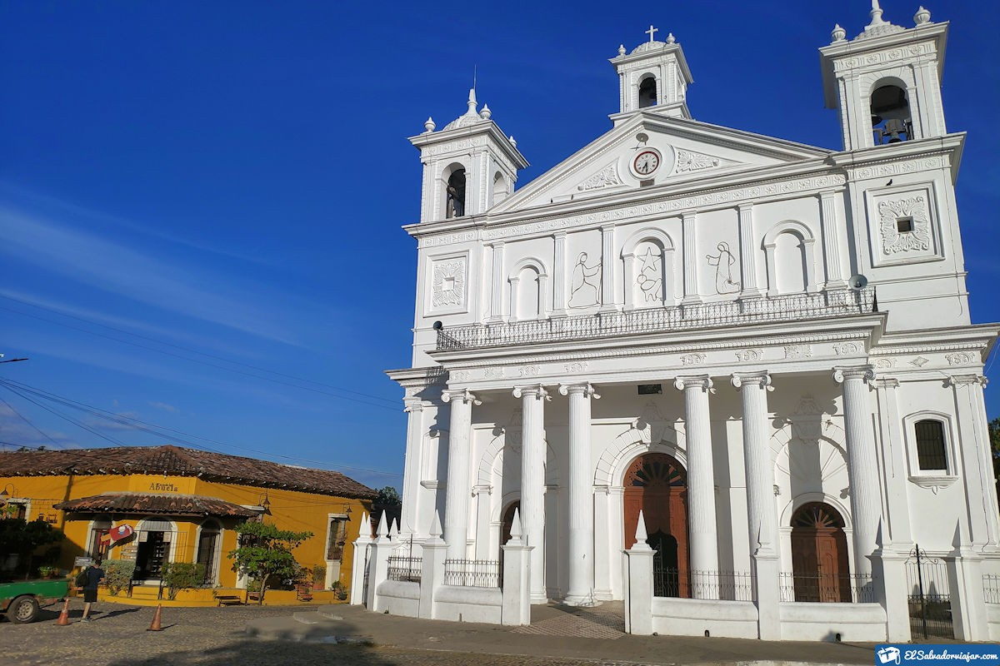

Conozcamos Ahuachapán
El departamento de Ahuachapán es uno de los 14 que conforman la República de El
Salvador. Su cabecera departamental es precisamente la ciudad de Ahuachapán, la cual se ubica
aproximadamente a unos 100 kilómetros de la capital del país, la ciudad de San Salvador. Su
ubicación geográfica lo posiciona como el departamento que se encuentra más al occidente de este
país de Centroamérica.
Este departamento cuenta con una extensión territorial de 1.239,60 kilómetros cuadrados. Este lugar
se caracteriza por ser una región fronteriza, colindando por el Este y el Noreste con la República
de Guatemala, específicamente con su departamento de Jutiapa. Por el lado Norte limita con el
departamento salvadoreño de Santa Ana. Así mismo, colinda con el departamento de Sonsonate por el
Oeste. Finalmente, en su extremo Sur limita con el Océano Pacífico.
¿Cuantos Municipios tiene la Tierra de Ahuachapán?
- Ahuachapán
- Apaneca
- Atiquizaya
- Concepción de Ataco
- El Refugio
- Guaymango
- Jujutla
- San Francisco Menéndez
- San Lorenzo
- San Pedro Puxtla
- Tacuba
- Turín
Historia
"Primero que todo, se debe saber que el nombre de este departamento es el resultado
de lo que se conoce como un topónimo. En este sentido, tenemos que proviene de los vocablos en
lengua náhuatl –ahua, que significa encino o roble, –cha, que significa casa o morada y –pan,
que significa sitio o lugar. Por esta razón se puede traducir como “el lugar de las casas de
roble”.
El mismo se fundó mientras se daba la administración del presidente Doctor Francisco Dueñas, con
lo cual se procedió a su creación por medio decreto legislativo que entró en vigencia el 9 de
febrero del año 1869.
Siendo su cabecera departamental la ciudad de Ahuachapán, el departamento está dividido en dos
grandes partidos o distritos. Estos son el distrito de Ahuachapán y el distrito de Atiquizaya.
Siendo el primero fundado por las leyes del 4 de julio de 1832, mientras que el segundo fue
instituido por una ley el 26 de febrero de 1869".
¿Ahuchapan tiene sitios Interesantes?
Concepción de Ataco
¡Uno de los destinos más coloridos de El Salvador te espera! Con sus calles empedradas, coloridos murales, artesanías, gastronomía y un clima fresco, así es Ataco, otro destino de la Ruta de Las Flores.
Leer másParque El Imposible
El Imposible es una selva, en partes tropical y en otras sub-tropical. Ubicada sobre la Sierra de Apaneca-Ilamatepeque, posee la mayor biodiversidad en el país como parte de un bosque maduro, típico de los inicios de Mesoamérica.
Leer más
Aguas Termales Santa Teresa
Termales Santa Teresa es un Hotel & Natural Spa ubicado en Ahuachapán con 30 piscinas termales y 4 restaurantes para relajarte, ofrece masajes relajantes y baños de caolinita para brindar vitalidad y rejuvenecer.
Leer másImportante
Ahuachapán tierras donde abunda el commercio e internacional, tierras con un clima calido, sera porque es un departamento de origen montañoso, ya que es este cuenta con gran cantidad de relieves como lo son el Cerro Apaneca, Volcán Apaneca o Chichicastepeque, el cerro Ataco, Cerro de Oro y Los Alpes.
Ademas de que este tambien cuenta con muchas fuentes de aguas naturales como lo es el Rio Paz, sus playaz: Barra de Santiago y la Garita Palmera, y sus lagunas: El Espino, La Laguna Verde y Las Ninfas.
Personas Interesantes de Ahuachapán

Dr. Alfredo Espino
Poeta salvadoreño que a partir de la publicación de su único libro, Jícaras Tristes, ha sido uno de los líricos más leídos en su país y está considerado como uno de los autores clásicos de la literatura centroamericana.
Leer másDr. Arturo Romero
Médico oriundo de Tacuba, Ahuachapán, con estudios en la Universidad La Sorbona de París, Francia. nombrado jefe de una unidad en el Hospital Rosales y, al mismo tiempo, escribe en la prensa sobre temas sociales. Considerado “El hombre símbolo”, fundó en 1944 el Partido Unión Democrática
Leer más
General Francisco Menendez
A los 30 años de edad comenzó la carrera militar, estando primeramente a la órdenes de Gerardo Barrios, Fue conocido como uno de los presidentes de El Salvador, quien cumplió funciones desde el año 1885 al año 1890.
Leer másConozcamos La Paz
Cuna de personajes que marcaron la historia de El Salvador, poseedor de muchas playas y ciudades llenas de tradiciones, La Paz es uno de los departamentos de la zona central que te espera con los brazos abiertos.
Su nombre en náhuat significa: la morada de los pececitos, de allí que cuente con muchos sitios turísticos con nacimientos de aguas, como el Parque Acuático Ichanmichen. Su cabecera es Zacatecoluca y sus habitantes son conocidos como viroleños.
¿Cuantos Municipios tiene el Departameto de la Paz?
- Cuyultitán
- El Rosario
- Jerusalen
- Mercedes de la Ceiba
- Olocuilta
- Paraiso de Osorio
- San Antonio Masahuat
- San Emigdio
- San Francisco Chinameca
- San Juan Nonualco
- San Juan Nonualco
- San Juan Talpa
- San Juan Tepezontes
- San Luis Talpa
- San Luis La Herradura
- San Miguel Tepezontes
- San Pedro Masahuat
- San Pedro Nonualco
- San Rafael Obrajuelo
- Santa Maria Ostuma
- Santiago Nonualco
- Tapalhuaca
- Zacatecoluca
Historia
Históricamente, se comprobó gracias a diversos hallazgos arqueológicos, que esta zona estuvo habitada para finales del siglo XI por una serie de comunidades de procedencia mayas-quiches o también conocidos como mayances. Así mismo, también se sabe que cerca de esta fecha fue cuando se produjo la primera ola de invasiones de pueblos centroamericanos de cultura nahuas.
La Paz tiene sitios Interesantes?
Playa los Blancos
La fresca brisa marina, arenas grises y una playa de grandes oleajes se conjugan para darnos la bienvenida a uno de los principales atractivos turísticos de El Salvador, ubicado en la costa del sol
Leer másCosta del Sol
Si buscas un lugar para disfrutar del sol desde el amanecer al atardecer, una playa de arena blanca y los atractivos adicionales como olas para practicar buen surf, esta debe ser tu elección.
Leer más
Turicentro Ichanmichen
Un parque acuático salvadoreño que a lo largo de los años ha ido ganando prestigio. Su gran tamaño y su surtido de aguas naturales lo convierten en uno de los turicentros más particulares del país.
Leer másImportante
Este departamento se ubica en una region montañosa, por lo que cuenta con ciertos lugares interesantes para visitar como lo son los cerros El Volcancito y La Carbonera, es mas tiene el Volcan de Chichontepec ubicado en un extremo de sus limites.
Al igual que su geografia, La Paz cuenta con una Hidrografia super extensas entre las mas importantes Estero Jaltepeque, que se ubica en las desembocaduras del rio Jiboa y Lempa, rios de este departamento o tambien podriamos mencionar algunas de sus lagunas: Nahualapa y Solomilla y El Patrono.
Personas Interesantes de La Paz

José Simeón Cañas
Fue rector, filósofo, teólogo y humanista, y ahora en la actualidad los salvadoreños recuerdan a este padre de la Patria, que con sus cualidades humanas y profesionales dio otro rumbo a la historia de América.
Leer másCamilo Minero
Fue un pintor, muralista y grabador salvadoreño. Se incursiono en el arte a temprana edad y realizó trabajos en el área de los óleos, grabados, serigrafías, acuarelas y murales.
Leer másAnastacio Aquino
Aquino pertenecía a la comunidad indígena de los nonualcos y formaba parte de la cuna de los Taites. Por lo que estaba destinado a liderar por derecho propio. Se le atribuyó y ostentó el título de «Comandante General de las Armas Libertadoras de Santiago Nonualco»
Leer másConozcamos Cabañas
Conoce el departamento más joven del país, su creación data del 10 de febrero de 1873: Cabañas, en este lugar disfrutarás de muchas tradiciones y artesanías, que muestran el legado de los salvadoreños. Sus parajes (sitios al aire libre), son una invitación a los amantes del ecoturismo.
Entre las tradiciones más destacadas están los Fogones, que se realiza cada 7 de diciembre desde las 6:00 p.m. La celebración es durante la víspera de la Virgen de la Concepción y consiste en juntar hojas y quemarlas en puntos estratégicos.
¿Cuantos Municipios tiene la Tierra de Cabañas?
- Cinquera
- Dolores
- Guacotecti
- Ilobasco
- Jutiapa
- San Isidro
- Sensuntepeque
- Tejutepeque
- Victoria
Historia
Sobre el aspecto histórico de esta región hay varias cosas que se deben resaltar. Primeramente, que se trata de uno de los departamentos más nuevos en la República de El Salvador. En este sentido, su creación es fechada el 10 de febrero del año de 1873. Cuando le fue dado el nombre por medio de un decreto legislativo a manera de homenaje de un político hondureño centroamericano llamado José Trinidad Cabañas.
La historia cuenta que este hombre de procedencia hondureña fue siempre leal a sus ideales centroamericanos, labor al cual dedicó toda su vida. Esto motivó a los legisladores a pronunciar un decreto legislativo en el año de 1873 donde se estipulaba el nombre que recibiría dicho departamento.
Cabañas tiene sitios Interesantes?
Cabañas es un lugar donde reina la cultura hogareña, es un departamento que cuenta con muchos sitios emblemáticos como lo son sus iglesias o monumentos, también este cuenta con un santuario de la flora y fauna el cual es el bosque de Cinquera además tenemos que mencionar que cabañas cuenta con hermoso ríos y lagos como lo son el Rio Titihuapa o su lago Suchitlán o su cerro hermoso de Ávila
Parroquia de Santa Bárbara
Leer más


Importante
Cabañas es un departamento qe cuebnta con un diverso relive, este departamento cuenta con los cerros La Cruz y el cerro el Ocotillo, ademas de que cuenta con otros sitios interesantes como lo son los embalses del Cerrón Grande y la presa hidroeléctrica 5 de Noviembre.
Personas Interesantes de Cabañas

Monseñor Benajmin Barrera
fue sacerdote en Roma el 29 de julio de 1934. Fue consagrado obispo titular y auxiliar de Santa Ana el 15 de noviembre de 1942, en la catedral de San Salvador.
Leer más
Doctor Juan Carlos Bonilla
Ha desempeñado los cargos de médico forense, diputado propietario y suplente por Cabañas, alcalde y jefe del distrito en 1936-1937.
Leer más
Miguel Larreynagaa
Ocupó en tres períodos el cargo de alcalde, en los cuales desarrolló importante labor, como establecer numerosos centros educativos en el área rural, luchando al mismo tiempo por la apertura del Plan Básico
Leer másConozcamos La Libertad
Si la playa es lo tuyo, La Libertad es uno de los departamentos que deberás recorrer, ya que en él encontrarás diferentes destinos si amas el surf o si quieres relajarte. Ubicado en la zona central, su cercanía a la capital y la accesibilidad son algunos de los motivos por lo que muchos llegan a La Libertad, ya que a menos de una hora estarás degustando de un manjar de mariscos frescos, te desconectarás del bullicio de la ciudad y disfrutarás de un bello atardecer.
¿Cuantos Municipios tiene el Departamento de La Libertad?
- Antiguo Cuscatlan
- Chiltiupán
- Ciudad Arce
- Colón
- Comasagua
- Huizúcar
- Jayaque
- Jicalapa
- La Libertad
- Santa Tecla
- Nuevo Cuscatlan
- San Juan Opico
- Quezaltepeque
- Sacacoyo
- San José Villanueva
- San Matias
- San Pablo Tecachico
- Talnique
- Temanique
- Teoteque
- Tepecoyo
- Zaragoza
Historia
Fue fundado el día 28 de enero del año 1865. Este departamento alberga algunos legados que se remontan a la época de sus primitivos habitante los lencas. Podemos apreciar algunas ruinas prehispánicas y varias edificaciones que datan de la época colonial.
La fundación de este departamento se ejecutó por el entonces presidente de la República, José María de San Martín con el nombre de Nueva San Salvador, el día 8 de agosto de 1854. Más adelante sería cambiado por departamento La Libertad.
La fundación de este departamento se hizo con la deliberada intención de convertirlo en la ciudad capital de El Salvador; ya que San Salvador había sido destruida casi en su totalidad por un gran terremoto. Más adelante estos planes fueron abortados por el gobierno.
La Libertad tiene sitios Interesantes?
Parque Walter Thilo Deininger
es una reserva natural que posee diferentes tipos de flora: Bosque de galería, seco caducifolio y bosque secundario.
Leer másEco Parque el Espino
Es un destino turístico de montaña que está situado a unos 10 kilómetros de la ciudad de Santa Tecla
Leer másJoya de Ceren
ofrece un viaje a través de la historia y el misticismo de la cultura maya de Centroamérica, el cual impacta por su perfecta conservación.
Leer másImportante
La libertad es un departamento que tiene muchos destinos interesantes como lo son sus playas, tales como El Tunco, El Sunzal, El Zonte, y si bien piensas que esto es poco tambien contamos con el Parque Ecologia El Boqueron y tambien nuestro Volcan "El Boqueron"
Personas Interesantes de La Libertad

Toño Salazar
Fue huérfano de padre y madre. Salazar fue un ilustrador, caricaturista y diplomático salvadoreño de mucha renombra en el siglo XX.
Leer másJuan Aberle Viscardi
director y compositor del Himno Nacional de la República de El Salvador
Leer másRoberto D'Aubuisson
Militar y político salvadoreño. Líder carismático y controvertido, se significó como inspirador de bandas paramilitares de extrema derecha
Leer másConozcamos Sonsonate
El departamento de Sonsonate es otro de los 14 que conforman la República de El Salvador. El mismo tiene como cabecera departamental a la ciudad de Sonsonate. Esta para el censo del año 2013 registró un total de 110.501 habitantes. Este departamento se encuentra al poniente de El Salvador y se divide en 16 municipios.
¿Cuantos Municipios tiene la Tierra de Sonsonate?
- Acajutla
- Armenia
- Caluco
- Cuisnahuat
- Izalco
- Juayúa
- Nahuizalco
- Salcoatitán
- San Antonio del Monte
- San Julian
- Santa Catarina Masahuat
- Santa Isabel Ishuatán
- Sabto Domingo de Guzman
- Sonsonate
- Sonzacate
Historia
Históricamente, Sonsonate era una vieja provincia de la Capitanía General de Guatemala. Sin embargo, pudo alcanzar la independencia de los españoles en el año 1821. Pero no fue sino hasta 1824 cuando pudo, conjuntamente con la provincia de San Salvador, llegar a formar lo que hoy se conoce como la República de El Salvador.
Según los historiadores, la ciudad de Sonsonate se fundó hacia el año 1552. Pero bajo el nombre de Villa de la Santísima Trinidad de Sonsonate. En este sentido, para la época de la colonia sirvió como sede de la Alcaldía Mayor de Sonsonate. Ya cuando se alcanzó la independencia de los españoles, hacia el año de 1824, se le asignó el título de ciudad, siendo como la cabecera departamental del departamento de Sonsonate.
Sonsonate tiene sitios Interesantes?
Playa los Cobanos
Una playa con arenas doradas que resaltan frente a otros destinos turísticos. Entre sus principales actividades acuáticas se encuentran el Snorkel, buceo, fútbol playa.
Leer másVolcan de Izalco
Conocido como “El faro del Pacífico”. Esto último porque durante 196 años hizo erupción constante, tanto que sus flamas se observaban hasta el océano.
Leer másTuricentro de Caluco
buscado por sus nacimientos de agua, que llevan frescura a quienes en ellos se sumergen, a través de sus dos piscinas. Es un lugra familiar para ir a disfrutar de un lugar semi natural con sus aguas y zonas recreativas
Leer másImportante
Sonsonote es un departamento donde se riegan numerosas quebradas y ríos, entre los cuales se encuentran: Grande o Sensunapán, Ceniza, Las Marías, Tepechapa.
Ademas este cuenta con otros sitios como los esteros de Barra Salada o la playa de Los Cóbanos.
Personas Interesantes de Sonsonate
Rafael Barrientos
Era un músico excepcional, cumbia compositor, y promotor del folclore costumbrista en el país
Leer másClaudia Lars
Fue una poetisa salvadoreña. Su obra es considerada de un depurado lirismo y destaca por su dominio de la métrica.
Leer más
Salazar Arrue
Fue un artista salvadoreño. Trabajó en el campo de la literatura y las artes plásticas
Leer másConozcamos San Salvador
El departamento de San Salvador es uno de los catorce departamentos integrantes de La República de El Salvador, se encuentra en la parte más septentrional del país, ocupando un área de 686,15 kilómetros cuadrados.
¿Cuantos Municipios tiene la Tierra de San Salvador?
- Aguilares
- Apopa
- Ayutuxtepeque
- Cuscatancingo
- Ciudad Delgado
- El Paisnal
- Guazapa
- Ilopango
- Mejicanos
- Nejapa
- Panchimalco
- Rosario de Mora
- San Marcos
- San Martin
- San Salvador
- Santiago Texacuangos
- Santo Tomas
- Soyapango
- Tonacatepeque
Historia
Fue erigido durante la administración del primer Jefe de Estado y prócer de la Independencia centroamericana Juan Manuel Rodríguez, por artículo constitucional el 12 de junio de 1824. Su cabecera, que es también capital de la República, es la ciudad de San Salvador, fundada por el capitán Gonzalo de Alvarado alrededor del 1 de abril de 1525.
Integran este departamento los distritos de San Salvador, creado en 1786, y los de Santo Tomás y Tonacatepeque (antes de Apopa), creado por Decreto Legislativo el 28 de enero de 1865.
¿San Salvador tiene sitios Interesantes?
El Boquerón
Explore el Parque Nacional El Boquerón y la ciudad de San Salvador en este tour combinado de todo el día. Primero, diríjase al parque nacional, que se encuentra en la cima del Volcán de San Salvador, y deténgase en la atracción principal: un cráter que mide 3.1 millas (cinco kilómetros) de diámetro
Leer másSan Salvador
Hágase una idea de los lugares históricos destacados, la bonita artesanía y la fascinante cultura de San Salvador durante esta visita turística de cuatro horas. Eche un vistazo a los monumentos nacionales de El Salvador, como la Catedral Metropolitana, el Palacio Nacional y la plaza de "El Salvador del Mundo".
Leer másPuerta del Diablo
La magia que tiene este sitio turístico es una grieta formada por dos peñascos en el cerro El Chulo. Uno de los atractivos principales de aquí son sus maravillosas vistas. En el mirador se puede contemplar la capital, el Océano Pacífico, el Lago de Llopango y el Volcán de San Vicente.
Leer másImportante
Si deseas recorrer territorio salvadoreño haciendo turismo, has tomado una excelente decisión; los departamentos de El Salvador son un compendio de todo, y más si visitas el departamento de San Salvador. El cual fue creado el 12 de junio de 1824, siendo el impulsor de ello Juan Manuel Rodríguez; allí encontrarás 19 municipios dignos de visitar, los cuales están rodeados de lugares únicos e inigualables. Para iniciar, los amantes del arte pueden visitar el Museo de Arte Marte; es aquí donde los hechos históricos se hacen presentes a través de la pintura.
Personas Interesantes de San Salvador
Francisco Dueñas
Francisco Dueñas Díaz nació en San Salvador, El Salvador, el 3 de diciembre de 1810. Fue hijo de José Miguel Dueñas y Secundina Díaz. Llegó a ser presidente de El Salvador en varios periodos, ocupando distintos cargos, como la vicepresidencia, entre estos.
Leer másJosé Mejía Vides
José mejía Vides nació el 19 de marzo de 1903 en la ciudad de San salvador, El Salvador. Fuel primer hijo de sus padres, don José Mejía y doña Jesús vides Navarro. Fue un artista salvadoreño que se especializo en las artes plásticas.
Leer másRutilio Grande
PEl sacerdote jesuita Rutilio Grande García nació el 5 de julio de 1928 en San Salvador. Fue hijo de Salvador Grande y de Cristin García, quienes murieron cuando Rutilio tenía 4 años de edad. Fue criado por su abuela y esta le inspiró la devoción al sacerdocio.
Leer másConozcamos La Unión
La Unión es un departamento de la zona oriental de El Salvador. Es el más oriental de los departamentos salvadoreños y el que posee en su jurisdicción las aguas e islas cuzcatlecas del Golfo de Fonseca, bahía compartida con Honduras y Nicaragua. En este departamento y golfo se encuentra el único municipio insular de El Salvador, Meanguera del Golfo. Su cabecera departamental es la ciudad y puerto de La Unión.
¿Cuantos Municipios tiene la Tierra de La Unión?
- Anamorós
- Bolivas
- Concepcion de Oriente
- Conchagua
- El Carmen
- El Sauce
- Intipuca
- La Union
- Lislique
- Meanguera del Golfo
- Nueva Esparta
- Pasaquina
- Poloros
- San Alejo
- San Jose
- Santa Rosa de lima
- Yayantique
- Yucuaiquin
Historia
A la llegada de los españoles a esta región en el año 1522, todo este territorio estaba ocupado por las tribus de los Lencas. Estos dieron un feroz combate para defender la tenencia de sus tierras y sus costumbres. No fue fácil para los conquistadores apoderarse de estas tierras, como tampoco fue fácil para los indígenas quienes tuvieron que pasar por todo tipo de vejámenes y torturas antes de ceder sus dominios.
Fue declarado departamento en 1865 durante el mandato de Francisco Dueñas Díaz, la cabecera departamental es el municipio de La Unión.
¿La Unión tiene sitios Interesantes?
Golfo de Fonseca
Golfo de Fonseca es un atractivo natural y turístico que enamora a los amantes del mar, senderismo, pesca y cualquier deporte acuático. Se encuentra ubicado en el departamento de La Unión. Está conformado por un archipiélago de islas y tiene una extensión territorial total de 3.200 km².
Leer másVolcán de Conchagua
El volcán de Conchagua está ubicado en el municipio homónimo, y en el extremo oeste del Golfo de Fonseca, en el departamento de La Unión, El Salvador. Tiene dos prominencias: El cerro Ocotal, con una altitud de 1.225 msnm, y el cerro Banderas, con 1.156 msnm. No existe registro de actividad eruptiva.
Leer másPlaya El Tamarindo
El departamento La Unión de El Salvador, se destaca por ofrecer una infinidad de sitios turísticos, especialmente sus playas. Entre ellas hay una particular, se trata de playa El Tamarindo, un edén al que muy pocos visitan y que destaca pos sus diversos paisajes naturales.
Leer másImportante
El departamento de La Unión es uno de los catorce que conforman el territorio de la República de El Salvador. El mismo se ubica en la zona oriental del país, albergando dentro de sus límites las aguas e islas cuzcatlecas del conocido Golfo de Fonseca.
Personas Interesantes de La Unión

Juan José Guzmán
Este personaje de la historia del departamento de la Unión nació en el año 1797. Fue un militar, licenciado y político salvadoreño que inició sus estudios en la Villa de San Vicente de Austria y Lorenzana. Luego continuó en la Universidad de San Carlos de Guatemala donde los culminó graduándose como doctor en derecho civil.
Leer másNapoleón Viera Altamirano
Napoleón Viera Altamirano. Periodista salvadoreño. Uno de los intelectuales más fecundos de El Salvador, orador, conferencista, ensayista, diplomático y académico.
Leer más
Hugo Lindo
Hugo Lindo Olivares fue un poeta, novelista, diplomático, político y abogado salvadoreño nacido en el Puerto de La Unión (El Salvador), el 13 de octubre de 1917, dentro de una familia de clase media trabajadora.
Leer másConozcamos San Miguel
San Miguel es una ciudad y municipio del departamento de San Miguel, El Salvador. Es también la cabecera departamental del departamento homónimo. Históricamente ha sido y sigue siendo, por casi 500 años ya, la ciudad más importante de la zona oriental del país. Tiene una población estimada de 247 119 habitantes para el año 2013, lo que la convierte en la cuarta ciudad más poblada del país, y la tercera más importante por su influencia económica. Está situada a 138 km al este de la capital, San Salvador.
¿Cuantos Municipios tiene la Tierra de San Miguel?
- Carolina
- Chapeltique
- Chinameca
- Chirilagua
- Ciudad Barrios
- Comacaran
- El Transito
- Lolotique
- Moncagua
- Nueva Guadalupe
- Nueva Eden de San Juan
- Quelepa
- San Antonio del Mosco
- San Gerardo
- San Jorge
- San Luis de la Reina
- San Miguel
- San Rafael Oriente
- Sesori
- Uluazapa
Historia
La conquista del actual territorio salvadoreño inició en el año 1525, cuando las tropas de Pedro de Alvarado atravesaron el río Paz. Cuatro años después, Pedrarias Dávila —quien tenía bajo su control el territorio de Nicaragua— comisionó a Martín de Estete con fines de exploración y anexión del territorio ubicado al oriente del río Lempa. Aunque la misión de Estete fracasó, Alvarado decidió contrarrestar las pretensiones de Dávila, y por ello delegó a Luis de Moscoso para que fundase una villa. gobierno.
¿San Miguel tiene sitios Interesantes?
Ruinas de Quelepa
Los que son amantes de la arqueología, van a amar las Ruinas de Quelepa ubicadas a 8 kilómetros de la ciudad de San Miguel y 2 kilómetros y medio de la ciudad de Quelepa. Estas ruinas son montículos, pequeñas lomas o colinas de hierbas el cual se esparcen por 40 plataformas ceremoniales en terrazas. Muchas de estas están aún sin excavar.
Leer másLaguna Olomega
La hermosa laguna Olomega se encuentra desde San Miguel a 40 kilómetros hacia el sureste. Allí podrás tomar un bote y dirigirte a Los Cerritos. Podrás pescar, nadar, relajarte y disfrutar del aire libre y de la zona el cual es muy importante para los lugareños.
Leer más
El Cuco
La playa El Cuco se encuentra ubicada en en el oriente de El Salvador, específicamente en el departamento de San Miguel y es una playa ideal para pasar un día de descanso completo, compartir en familia y desconectarse de todo bullicio de la ciudad.
Leer másImportante
Una ciudad turística conocida por las grandes celebraciones de los carnavales de San Miguel, una de las festividades más importantes del país que se lleva a cabo en el mes de noviembre. Para la época seca, San Miguel tiene el clima más caluroso de El Salvador, sin embargo, se puede disfrutar de la ciudad en otras épocas del año si no quieres pasar tanto calor
Personas Interesantes de San Miguel
Óscar Arnulfo Romero
Óscar Arnulfo Romero y Galdámez, conocido como monseñor Romero, fue un sacerdote católico salvadoreño, cuarto arzobispo metropolitano de San Salvador, célebre por su prédica en defensa de los derechos humanos.
Leer más
Capitán General José Gerardo Barrios Espinoza
Político y militar salvadoreño que fue presidente de la República entre 1859 y 1863. Liberal moderado, tomó medidas contra el clero, hecho que fue aprovechado por el dictador guatemalteco Rafael Carrera para invadir El Salvador, destituir a Barrios e imponer a Francisco Dueñas. Detenido en Nicaragua, Gerardo Barrios fue entregado a Dueñas, quien lo hizo ejecutar.
Leer más
Miguel Álvarez Castro
Poeta, músico y político salvadoreño, nacido en una hacienda próxima a la ciudad de San Miguel en 1795, y fallecido en otra hacienda del departamento homónimo en 1855. Destacado tanto por sus composiciones líricas como por su incesante actividad política, está considerado como el primer poeta salvadoreño con nombre conocido.
Leer másConozcamos San Vicente
San Vicente es uno de los catorce departamentos que conforman la República de El Salvador, en la región Paracentral. La ciudad cabecera es San Vicente. San Vicente es la ciudad cabecera del municipio y departamento homónimos en El Salvador. Fue fundada en el año 1635 y llegó a ser capital de la república en el siglo XIX. Durante la colonización española, fue una de las localidades más importantes de la Intendencia de San Salvador. San Vicente es uno de los catorce departamentos que conforman la República de El Salvador, en la región Paracentral. La ciudad cabecera es San Vicente.
¿Cuantos Municipios tiene la Tierra de San Vicente?
- Apastepeque
- Guadalupe
- San Cayetano Istepeque
- San Esteban Catarina
- San Ildefonso
- San Lorenzo
- San Sebastian
- San Vicente
- Santa Clara
- Santo Domingo
- Tecoluca
- Tepetitán
- Verapaz
Historia
En el departamento se han encontrado restos y vestigios arqueológicos de la cultura de los nahuas de kuskatan y de los nonualcos durante el postclasico, en municipios como San Cayetano Istepeque, Verapaz, Tepetitán y Tecoluca. El departamento fue creado durante la administración del primer jefe de Estado y optimate de la Independencia Centroamericana Juan Manuel Rodríguez, el 12 de junio de 1824 y funcionó como capital de El Salvador de 1834 a 1840.
Entre los monumentos artísticos hay que señalar la iglesia hacia 1760, frente a la plaza del mismo nombre, La Torre de diciembre al 31 del mismo mes en honor a san Vicente de Austria y Lorenzana.
¿San Vicente tiene sitios Interesantes?
Centro Histórico de San Vicente
Se ubica en el departamento de San Vicente. Este monumento es tan vistoso de día, como de noche. Es el centro del casco urbano de la ciudad. Rodeado por una serie de árboles, es ideal para descansar, leer un libro y dejarse llevar por los encantos y amabilidad de su gente.
Leer másParque Recreativo Amapulapa
La riqueza de este parque natural se encuentra en su suelo de origen volcánico dominado por cenizas y lava en el que afloran muchos nacimientos de agua de los cuales se nutre la zona. La flora está caracterizada por los gigantes y hermosos Amates que brindan un espeso follaje y los cuales embellecen el lugar.
Leer másParque Recreativo Laguna de Apastepeque
Visita este parque que descansa sobre un cráter de explosión volcánica, la cobertura vegetal en las riberas se encuentra tipificada como un bosque húmedo sub tropical, con transición tropical; considerada como una de las principales zonas de vida de El Salvador, se extiende desde la cadena volcánica hasta las planicies costeras.
Leer másImportante
Si eres amante de la cultura, te gustará visitar la Basílica Nuestra Señora del Pilar, que data de 1762, también debes visitar su iglesia catedral ubicada frente al parque central donde también se encuentra el antiguo Palacio Municipal construido en 1950. La Laguna de Apastepeque, es un tesoro turístico que posee San Vicente, es una laguna de origen volcánico en el que podrás dar un paseo en lancha o aprovechar a comer a la orilla de sus refrescantes aguas. San Vicente es un lugar, lleno de coloridos paisajes, atractivos turísticos, dulces, tradiciones que debes agregar a tu lista de destinos a visitar en El Salvador.
Personas Interesantes de San Vicente
Cecilio Orellana
Músico y Maestro de Música nacido en San Esteban Catarina el 22 de noviembre de 1908, son sus padres Daniel Menjívar y Paula Orellana. Inicia sus estudios musicales en su natal San Esteban Catarina. Bajo la tutela del Maestro Gabriel Melara estudia flauta y con el Maestro Domingo Santos estudia solfeo.
Leer másEsteban Servellón
Nació en San Esteban Catarina, Departamento de San Vicente, El Salvador, el 16 de octubre de 1921. Sus estudios primarios los realiza en San Esteban Catarina, incursionando en la música a los ocho años como violinista y maestro de coro.
Leer másChico Navarrete
Nació en San Esteban Catarina el 09 de marzo de 1923, contrabajista de grandes meritos. Laboró durante 40 años en la orquesta sinfónica nacional, perteneció a orquestas famosas salvadoreñas como la “Orquesta Internacional Polio” entre otras./p> Leer más
Conozcamos Chalatenango
Chalatenango es un departamento de El Salvador. Su cabecera departamental es Chalatenango, se encuentra ubicado al norte de la capital del país, San Salvador, fronterizo con Honduras. En este departamento se ubica el cerro El Pital con 2730 m de altitud sobre el nivel del mar, el punto más elevado del país. El clima más frío de El Salvador tiene lugar en estas alturas. El actual gobernador departamental es José Raimundo Alas Alas (exalcalde del municipio de Nueva Trinidad), nombrado en julio de 2014 por el Presidente Salvador Sánchez Cerén. Sustituye al empresario Carlos Alvarenga Márquez, nombrado en julio de 2009, por el Presidente de El Salvador, Mauricio Funes.
¿Cuantos Municipios tiene la Tierra de Chalatenango?
- Agua Caliente
- Arcatao
- Azacualpa
- Cancasque
- Chalatenango
- Citalá
- Comapala
- Concepción Quezaltepeque
- Dulce Nombre de María
- El Carrizal
- El Paraíso
- La Laguna
- La Palma
- La Reina
- Las Flores
- Las Vueltas
- Nombre de Jesús
- Nueva Concepción
- Nueva Trinidad
- Ojos de Agua
- Potonico
- San Antonio de la Cruz
- San Antonio Los Ranchos
- San Fernando
- San Francisco Lempa
- San Francisco Morazán
- San Ignacio
- San Isidro Labrador
- San Luis del Carmen
- San Miguel de Mercedes
- San Rafael
- Santa Rita
- Tejutla
Historia
Esta zona fue habitada durante siglos por tribus Lencas que fueron los primeros en llegar a esas tierras. Pero alrededor del año 1500 fueron invadidos por los Pipiles que eran parte del señorío de Cuzcatlán.
En un principio, las poblaciones lencas se mostraron rebeldes frente a la autoridad española. En 1537 lucharon contra los invasores al mando del cacique Lempira, de Honduras. El dominio español en este territorio se concretó en la siguiente década y los indígenas tuvieron que regirse por nuevas leyes que les imponían
Chalatenango obtuvo el título de villa en el año de 1847 y fue elevado al título de departamento por decreto legislativo del 14 de febrero de 1855, en una ley sancionada por el Presidente Coronel José María San Martín. Su cabecera lleva por nombre Chalatenango, durante su fundación constó de los distritos o partidos de Chalatenango y Tejutla, creados desde 1786 y de Dulce Nombre de María erigido por ley del 15 de julio de 1919.
¿Chalatenango tiene sitios Interesantes?

Cerro El Pital
Si deseas visitarlo, te contamos que el cerro El Pital se encuentra ubicado específicamente en el caserío El Pital, cantón Río Chiquito. Esto es en el municipio de San Ignacio, departamento de Chalatenango en El Salvador.
Leer másLa Puntona
El lugar cuenta con un amplio espacio para parqueo al aire libre. Para llegar ahí puede conducirse por la carretera Longitudinal del Norte o carretera hacia Chalatenango y antes de llegar a la gasolinera del desvío del municipio de El Paraíso, puede tomar el desvío que conduce hacia el caserío La Angostura, hasta llegar luego al caserío El Tamarindo. Es un recorrido que le tomará entre 5 y 10 minutos.
Leer másRío Sumpul
El río Sumpul es uno de los ríos menos contaminados de El Salvador, sus frescas aguas que nacen en el territorio Hondureño y recorre la parte alta del departamento de Chalatenango hasta desembocar en el embalse del Cerrón Grande.
Leer másImportante
El clima frío es uno de los atrayentes para los turistas, quienes recorren las extensas plantaciones de hortalizas orgánicas, que pueden ser extraídas por los visitantes. Lo más recomendable es quedarse en la zona uno o más días, así después de las caminatas podrás descansar en cualquiera de las cabañas, hoteles, hostales y otras opciones de hospedajes.
Por otra parte, Chalatenango es uno de los máximos productores de añil. También se caracteriza por ser una de las zonas cafetaleras más importantes de El Salvador, en especial los municipios de San Ignacio, Tejutla, La Palma, donde productores han logrado posicionarse y producir cafés ganadores del prestigioso Certamen de Taza de Excelencia. En estos lugares además de saborear un delicioso café podrás hacer tours para conocer el proceso de producción.
Personas Interesantes de Chalatenango

Miguel Plácido Peña
Nació el 5 de octubre de 1862 en la ciudad de Chalatenango; según historiadores fue un destacado poeta de los círculos literarios modernistas que existieron en El Salvador a finales del siglo XX, estrechamente vinculado con el sector intelectual favorable al gobierno dictatorial de los hermanos Ezeta, gobernantes de El Salvador en esa época.
Leer másMatias Romero Coto
Fue sacerdote, poeta, ensayista, filósofo, lingüista, conferencista y un académico muy destacado de El Salvador, que a parte del español también dominaba otros idiomas como el latín, griego, alemán, italiano, francés e inglés
Leer másJosé María San Martín
José María San Martín es un personaje poco conocido actualmente, sin embargo es el responsable de la fundación del departamento de Chalatenango, en los tiempos en que era presidente de El Salvador. Este suceso posiblemente haya sido motivado por sus raíces chalatecas y es por ello que esta es una historia que vale la pena conocer.
Leer másConozcamos Santa Ana
Santa Ana fue erigido durante el gobierno del Coronel José María San Martín por Ley de 8 de febrero de 1855.
Su cabecera es la ciudad de Santa Ana y constó de los distritos o partidos de Santa Ana y Metapán, creados en 1786, y de Chalchuapa, establecido por Decretos Legislativo de 19 de marzo de 1880.
¿Cuantos Municipios tiene la Tierra de Santa Ana?
- Candelaria de la Frontera
- Chalchuapa
- Coatepeque
- El Congo
- El Porvenir
- Masahuat
- Metapan
- San Antonio Pajonal
- San Sebastian Salitrillo
- Santa Ana
- Santa Rosa Guachipilín
- Santiago de la Frontera
- Texistepeque
Historia
El departamento de Santa Ana fue fundado en el año 1855 mientras transcurría el mandato presidencial de José María San Martín. Sin embargo, desde el periodo preclásico estas tierras fueron habitadas por diferentes grupos de procedencia maya. Como prueba de esto se tienen a los yacimientos arqueológicos Casa Blanca, Tazumal y el Trapiche.
Es así como se sabe que hacia periodo clásico tardío fueron mayormente dos grupos de pueblos de cultura maya habitaron lo que ahora se conoce como el departamento de Santa Ana. Estos son; los pokomames, quienes se ubicaron tanto hacia la zona occidental como al sur de la ribera del río Lempa; y los Chortis, quienes por el contrario de los anteriores, se asentaron hacia el norte del río Lempa.
Santa Ana tiene sitios Interesantes?

El Teatro Nacional
Su estilo neoclásico francés le otorga una gran belleza y elegancia a su interior: El vestíbulo, la Gran Sala, el Salón Foyer, los escenarios, los palcos y la Terraza Española. Todo hecho con materiales como la caoba, decoración en yeso y las pinturas de artistas italianos.
Leer más
Lago Coatepeque
Este lago de origen volcánico surgió de una explosión hace entre 57.000 y 72.000 a.C.
Sus principales atractivos turísticos son las actividades acuáticas que se pueden realizar en sus aguas (vela, natación, piragüismo, buceo, etc).

Ruinas de Tazumal
Este conjunto arqueológico corresponde a un asentamiento que vivió en esta zona entre los años 1 - 1200 D.C. La pirámide Tolteca es el reclamo principal del recinto, además de un museo con los restos arqueológicos de las excavaciones. Un lugar interesante para los amantes de la historia y de la arqueología.
Leer másImportante
Santa Ana es uno de los departamentos mas caracteristicos de El Salvador, por su cultura y por todo lo que puedes disfrutar en el, es un departamento que tiene mucho lugares donde puedes disfrutar como lo son su Volcan de Santa Ana o El Volcan Chingo, o podemos disfrutar de sus rios: Guajoyo y el río Suquiapa.
Personas Interesantes de Santa Ana
Pancho Lara
Francisco Antonio Lara mejor conocido como “Pancho Lara”. Poeta y músico al que se le atribuyen alrededor de 400 composiciones, muchas infantiles y las más famosas de perfil folclórico y popular.
Leer más
David Escobar Galindo
Es uno de los poetas más lúcidos y discutidos de la actualidad. Su poesía es vigorosa, vital y rica en contenidos humanos. Es Doctor en Jurisprudencia y Ciencias Sociales.
Leer másClaribel Alegria
Claribel Alegría fue una escritora, poeta, narradora, ensayista y traductora salvadoreña-nicaragüense. Claribel se consideraba a sí misma salvadoreña, ya que transcurrió su niñez en la ciudad de Santa Ana
Leer másConozcamos Cuscatlán
Cuscatlán es un departamento que se ubica en la zona central de El Salvador. Este departamento posee los siguientes límites geográficos: al norte con el departamento de Chalatenango, al sur con La Paz y San Vicente, al este por los departamentos de Cabañas y San Vicente, y al oeste con San Salvador. Su nombre proviene de una población pipil precolombina, etimológicamente significa “lugar de joyas y collares”, que proviene de las voces “coxcatl”, “cuzcatl” o “cuzcat” (joya preciosa, cuenta de escapulario, collar) y “tlan” o “tan” (preposición locativa).
¿Cuantos Municipios tiene la Tierra de Cuscatlán?
- Cojutepeque
- Candelaria
- El Carmen
- El Rosario
- Monte San Juan
- Oratorio de Concepción
- San Bartolomé Perulapía
- San Cristóbal
- San José Guayabal
- San Pedro Perulapán
- San Rafael Cedros
- San Ramón
- Santa Cruz Analquito
- Santa Cruz Michapa
- Suchitoto
- Tenancingo
Historia
Cuzcatlán, era desde la antigüedad la ciudad célebre por sus riquezas y el poderío de sus príncipes, la misma fue considerada la principal metrópoli de los aborígenes pipiles de El Salvador Precolombino. Fundada en 1504 por el monarca Topiltzín Acxitl y librada de muchas guerras por el valiente nativo Atlacatl, quien reinó en el lugar antes de la época colonial.
En 1770, su población apenas la formaban 19 familias indígenas y 115 ladinos. Los siglos han transcurrido y sucesos importantes han marcado la historia de la ciudad. Cuscatlán constó con los distritos o partidos de Cojutepeque y Suchitoto, creados respectivamente en 1786. El departamento fue constituido durante la administración del jefe de Estado Nicolás Espinoza, por Decreto Ejecutivo el 22 de mayo de 1835.
Originalmente Suchitoto fue su cabecera, pero a partir del 12 de noviembre de 1861 es la ciudad de Cojutepeque.
¿Cuscatlán tiene sitios Interesantes?
Cerro Las Pavas
El cerro tiene una imponente vista al lago de Ilopango desde distintos puntos, al valle Jiboa y al volcán de San Vicente. En su interior hay enromes árboles que tienen más de 100 años, los cuales cubren el Santuario de La Virgen de Fátima que está en la cúspide.
Leer másLago artificial "Cerrón Grande"
Embalse del Cerrón Grande, se formó en el invierno de 1976 con la creación de la Central Hidroeléctrica del Cerrón Grande, en el cauce del río Lempa. Su nombre en Náhuatl significa “Lugar de Flores”. Aunque es un lago artificial, en él se produce la mayoría de energía eléctrica del país.
Leer más
Suchitoto
Suchitoto es un municipio del departamento de Cuscatlán, El Salvador. Su territorio ha sido habitado desde la época precolombina, y también fue el sitio donde se fundó la villa de San Salvador en 1528, que tuvo una breve existencia.
Leer másImportante
Sus áreas para el disfrute, plazas, ríos y montañas son únicos en el país, incluso considerados símbolos de la ciudad. Conocer cada uno de ellos es adentrarse en su historia, mientras que al mismo tiempo, podrás realizar diferentes actividades que harán de tus vacaciones la mejor de todas. Sin más, te invitamos a descubrir qué ver y hacer en el departamento de Cuscatlán durante tu visita.
Personas Interesantes de Cuscatlán
Alfonso Quiñones Molina
Político salvadoreño que fue elegido presidente de la República en 1923 por un período de cuatro años, con lo que continuaba la labor de gobierno de la dinastía Meléndez-Quiñones, que gobernó El Salvador desde 1914 a 1927. Era uno de los principales dirigentes del Partido Demócrata, desde cuyas filas participó numerosas veces en los asuntos políticos del país, donde defendía los intereses de la oligarquía cafetera.
Leer másPío Romero Bosque
Pío Romero Bosque fue un político y abogado salvadoreño, quien fue Presidente de El Salvador desde 1927 hasta 1931.
Leer másMax Olano
Salvadoreño de nacimiento, originario de Cojutepeque. Funda en 1951 la empresa DIANA. Casado con Sonia Barrera quien desde su muerte ha tomado las riendas de la empresa junto a su hermano Hugo Barrera.
Leer másConozcamos Usulután
El departamento de Usulután pertenece a la zona oriental de El Salvador y limita al norte con los departamentos de San Vicente y San Miguel; al este con San Miguel; al sur con el Océano Pacífico, y al poniente con San Vicente. Usulután significa “lugar de ocelotes”. Posee una extensión territorial de 2,130 kilómetros cuadrados y una población de 336,541 habitantes.
¿Cuantos Municipios tiene la Tierra de Usulután?
- Alegria
- Berlín
- California
- Concepcion Batres
- El Triunfo
- Ereguayquín
- Estanzuelas
- Jiquilisco
- Jucuapa
- Jucuaran
- Mercedes Umaña
- Nueva Granada
- Ozatlan
- Puerto El Triunfo
- San Agustin
- San Buenaventura
- San Dionisio
- San Francisco Javier
- Santa Elenaaa
- Santa Maria
- Santiago de Maria
- Tecapán
- Usulután
Historia
Usulután fue habitado originalmente por grupos lencas. Hacia el siglo XV, sin embargo, fueron conquistados por pipiles. Durante la época de la conquista, los residentes repelieron durante un mes a las milicias españolas en el año 1529, quienes estaban bajo el mando de Diego de Rojas.
¿Usulután tiene sitios Interesantes?
Bahía de Jiquilisco
Descubre el manglar más grande de El Salvador en la Bahía de Jiquilisco, en Usulután, un área que alberga la mayor cantidad de aves marinas en el país, muchas de ellas en peligro de extinci ón.
Leer más
Centro Histórico de Usulután
El Centro Histórico de Usulután mantiene sus calles intactas y sus parques igual de vistosos que cuando fueron nombrados ciudad, en 1865. Este pueblo tan creyente, como religioso, cuenta con una de las iglesias más imponentes del país.
Leer másBulevar y muelle de Puerto Parada
Desde esta moderna infraestructura puedes partir hacia las increíbles islas de riqueza natural en esta zona. A través de un paseo en lancha, puedes llegar a las islas La Pirraya, Rancho Viejo y San Sebastián de la Bahía de Jiquilisco y vivir una natural experiencia entre manglares y aves migratorias que viven en este lugar.
Leer másImportante
Usulután es una ciudad comercial nata. Si te gusta conocer a fondo la vida tradicional de los salvadoreños, este es un excelente lugar. Sus calles visiblemente comerciales, ofrecen una perspectiva del día a día de sus habitantes. Como es de esperarse en una llanura costera, su clima es bastante caliente, por lo que ropa fresca, agua y un buen bloqueador solar serán tus grandes acompañantes en esta aventura.
Personas Interesantes de Usulután
Alberto Masferrer
Escritor e intelectual salvadoreño. De personalidad polémica, fue una de las figuras más dinámicas de la vida cultural y política de su país y ejerció una fuerte influencia en las generaciones más jóvenes.
Leer más
Armando Rodríguez Portillo
Armando Rodríguez Portillo. Fue un poeta y cuentista romántico, de la poesía y cuento salvadoreño.
Leer másVicente Rosales
Vicente Rosales y Rosales. Destacado poeta y periodista salvadoreño. Precursor de la vanguardia literaria y de la poética social en El Salvador.
Leer másConozcamos Morazán
Al departamento se le dio el nombre actual por decreto el 14 de marzo de 1887, en honor del paladín de la Unión Centroamericana, general Francisco Morazán. Por ley del 5 de febrero de 1877 se otorgó a la villa de Gotera el título de ciudad. Fue fundado como departamento el 14 de julio de 1875.
Morazán se ubica en la zona geográfica oriental de la República. Está limitado al norte por Honduras, y al sur y al oriente por el departamento de San Miguel. Tiene una altitud de 245 metros sobre el nivel del mar y su extensión territorial es de 1,447 kilómetros cuadrados.
¿Cuantos Municipios tiene la Tierra de Morazán?
- Arambala
- Cacaopera
- Chilanga
- Corinto
- Delicias de Concepcion
- El Divisadero
- El Rosario
- Gualococti
- Guatajiagua
- Joateca
- Jocoaitique
- Jocoro
- Lolotiquillo
- Meanguera
- Osicala
- Perquin
- San Carlos
- San Fernando
- San Francisco Gotera
- San Isidro
- San Simon
- Sensembra
- Sociedad
- Torola
- Yamabal
- Yoloaiquin
Historia
FEn el departamento todavía se conservan rastros de la presencia de los paleoindios —primeros pobladores de El Salvador— en la Cueva del Espíritu Santo, un sitio arqueológico con pinturas rupestres en las cercanías del municipio de Corinto. En la época previa a la conquista española, Morazán estuvo habitado por indígenas lencas.
En la época colonial, el territorio estuvo subdivido en los partidos de Gotera y Osicala. Fue creado con el nombre de departamento de Gotera el 14 de julio de 1875, por disposición del presidente Santiago González. Por decreto de la Asamblea Legislativa recibió su nombre actual el 14 de marzo de 1887, en homenaje al unionista centroamericano general Francisco Morazán.
Durante la Guerra Civil de El Salvador, Morazán fue una de las zonas más disputadas del territorio nacional. El Ejército Revolucionario del Pueblo, una de las organizaciones integrantes del FMLN, concentró una numerosa tropa insurgente en varios campamentos de la zona norte del departamento. Asimismo, cerca de Perquín estuvo instalada la base de operaciones de Radio Venceremos. En 1981, una unidad de la Fuerza Armada de El Salvador perpetró cerca de Arambala la Masacre de El Mozote, en la que murieron unos 1 000 campesinos.
¿Morazán tiene sitios Interesantes?
Cueva del Espíritu Santo
Se trata de una gruta en la que destaca el arte rupestre, con figuras de diferentes formas, pintadas con sustancia de vivos colores, especialmente el rojo. La mayoría de la figuras son representaciones humanas.
Leer másLlano del Muerto
El Llano del muerto es una extensa área de aproximadamente 6 mil hectáreas de pinares y praderas. Está situado en el municipio de Perquín, Departamento de Morazán, El Salvador. , con nacimientos de agua, que recorren las grandes formaciones rocosas hasta llegar a Río Sapo y Guaco.
Leer másArambala
Este municipio es poseedor de montañas, ríos y cascadas exuberantes, así como de importantes lugares históricos. Esta localidad de clima agradable y de abundantes pinares es ideal para practicar ecoturismo. Destaca en este territorio el río Sapo, que es considerado uno de los caudales más hermosos de El Salvador. Sus aguas color turquesa y sus formaciones rocosas a sus alrededores le dan un toque singular. Otro punto de interés en Arambala es la cascada Las Pilas, muy frecuentada por turistas nacionales y extranjeros.
Leer másImportante
Muchas de estas poblaciones sufrieron el embate de la guerra civil hace más de 27 años, sin embargo, tras la firma de los Acuerdos de Paz recobraron su belleza. Hoy son considerados sitios de interés histórico y casi obligatorios para turista nacionales y extranjeros. En esta ruta se puede disfrutar de un ambiente agradable, aire puro, extensos pinares, riachuelos, manantiales y sorprendentes caídas de agua.
Personas Interesantes de Morazán

José Francisco Morazán Quezada
Militar y político hondureño, último presidente de la República Federal de las Provincias Unidas del Centro de América
Leer másFidel Sánchez Hernández
Fidel Sánchez Hernández (Morazán, 1917 – San Salvador, 2003) fue un militar y candidato presidencial de El Salvador en los comicios de 1967 como representante del Partido de Conciliación Nacional; ejerciendo el rol de jefe de estado entre los años 1967 – 1972 y enfrentó un golpe de estado pocos meses antes de culminar su administración.
Leer másJoaquín Rodezno
Joaquín Rodezno ha sido un importante representante del país, que dedicó 30 años a la carrera diplomática en el exterior. En esos años Rodezno, desarrolló diferentes cargos empezando en Francia, como ministro consejero y luego como Embajador en Bélgica, después en Roma, para finalizar su carrera en Francia y completar 15 años al servicio diplomático como Embajador de El Salvador.
Leer más


 

 

 




